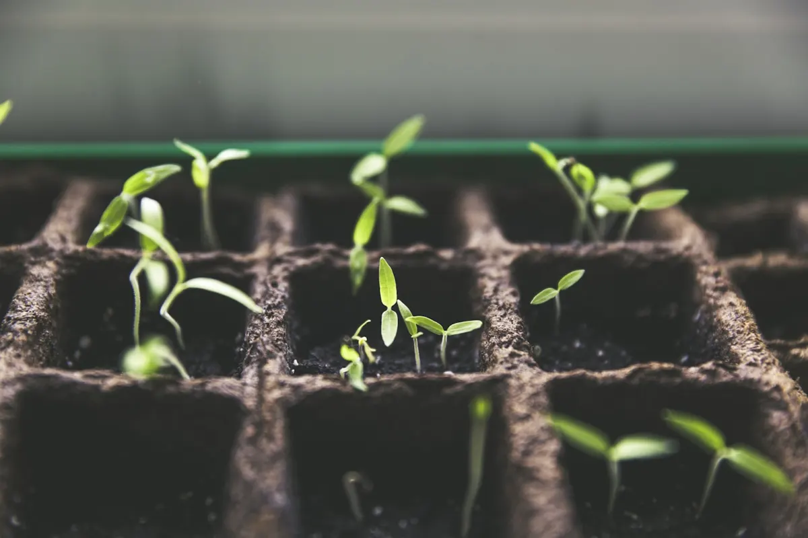
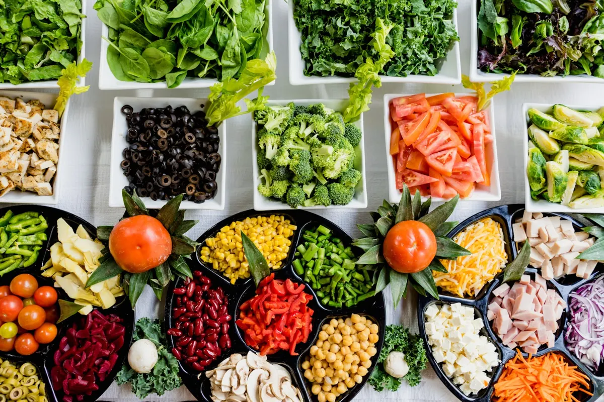

Ancrés au village
Les projets partent des besoins exprimés par les habitants, pas de bureaux lointains.
Association d'aide à la ruralité · Bafing, Côte d'Ivoire
L'Alliance Tounga-djè relie la diaspora et les habitants du Bafing pour mener des projets utiles à la vie rurale : agriculture, école, eau et santé.
Les projets partent des besoins exprimés par les habitants, pas de bureaux lointains.
Ceux qui sont partis gardent un lien utile avec ceux qui sont restés.
Chaque projet est suivi et chaque donateur sait à quoi son argent a servi.

L'association
L'Alliance Tounga-djè est une association d'aide à la ruralité. Elle rassemble des membres attachés à la région du Bafing, au nord-ouest de la Côte d'Ivoire, qu'ils vivent au pays ou en France.
Notre conviction est simple : les villages ont des idées, des bras et des terres. Ce qui manque souvent, c'est un coup de pouce pour s'organiser, se former et s'équiper. C'est ce coup de pouce que nous voulons apporter.
Nos actions
Nous concentrons nos efforts là où un petit investissement change durablement le quotidien des familles.
Semences, petit matériel et accès aux marchés, en lien avec la coopérative Alliance Tounga AGROCOOP.
Ateliers pratiques sur les techniques de culture, la conservation des récoltes et la gestion d'une exploitation.
Fournitures, soutien scolaire et accompagnement des élèves, pour que l'école reste une chance pour tous les enfants.
Points d'eau, entretien des pompes et sensibilisation à l'hygiène pour limiter les maladies liées à l'eau.
Soutien aux centres de santé ruraux et aux campagnes de prévention organisées avec les autorités locales.
Rencontres, parrainages et transmission des savoirs entre la diaspora, les jeunes et les anciens.
Aucune action dans ce domaine pour le moment.
Notre méthode
Les habitants, les chefs de village et les groupements nous font part de leurs priorités.
Nous montons le projet avec eux : budget, calendrier, rôle de chacun.
Membres, diaspora et partenaires réunissent les moyens nécessaires.
Photos, dépenses et résultats sont partagés avec tous ceux qui ont contribué.
Notre territoire
Au nord-ouest de la Côte d'Ivoire, la région du Bafing a pour chef-lieu Touba. C'est une région rurale où l'agriculture fait vivre la plupart des familles, loin des grands centres urbains.
C'est là, notamment autour d'Ourossanisso, que nous concentrons nos efforts. L'association travaille en bonne entente avec la coopérative Alliance Tounga AGROCOOP, qui organise les producteurs de la zone.

Agir avec nous
Que vous viviez au pays ou à l'étranger, votre temps, votre réseau ou vos compétences comptent autant qu'un don.
Rejoignez l'association, participez aux décisions et suivez chaque projet de près.
Je deviens membreCommunication, comptabilité, agronomie, enseignement : mettez vos compétences au service des villages.
Je propose mon aideEntreprise, collectivité ou fondation : construisons ensemble un projet à fort impact local.
Proposer un partenariatFaire un don
Choisissez un montant et annoncez votre don. Nous vous répondons avec les moyens de paiement disponibles (Wave, Orange Money, virement) et nous vous tenons informé de l'utilisation des fonds.
Questions fréquentes
Il finance les projets décidés avec les villages : matériel agricole, fournitures scolaires, points d'eau, actions de santé. Vous pouvez indiquer le domaine que vous souhaitez soutenir.
Nous partageons avec les donateurs des nouvelles des projets : photos, dépenses réalisées et résultats obtenus.
Oui. Une grande partie de nos membres vit hors de Côte d'Ivoire. Vous pouvez donner, adhérer ou mettre vos compétences à disposition à distance.
Écrivez-nous avec le formulaire de contact en choisissant « Proposer un projet ». Décrivez le besoin, le village concerné et les personnes à contacter : nous revenons vers vous.
Contact
Une question, une envie d'adhérer, un projet pour votre village ? Laissez-nous un message, nous vous répondons rapidement.